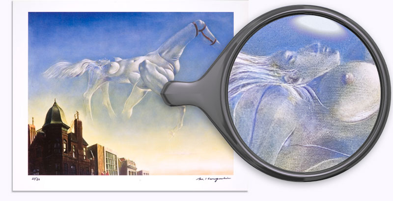

A limited release of 80 copies. Numbered and signed by Haruguchi.
Size: 409mm 515mm (Sheet 480mm 593mm)
Printed: König Art Printing Center (Berlin, Germany)
Price: 6,000 yen (including tax)
Do not expose to direct sunlight to avoid discoloration.